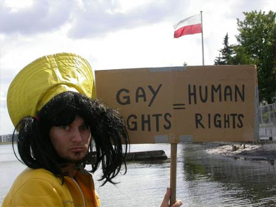
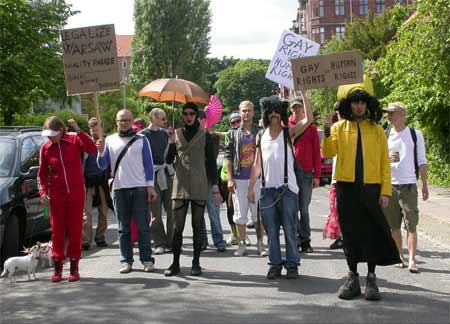
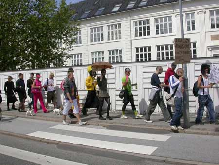
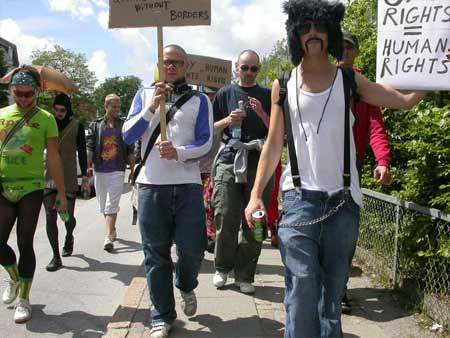
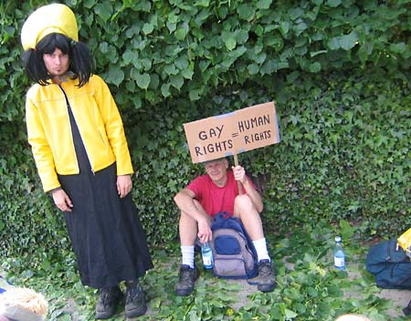

Dennis Agerblad var med da Dunst holdt PRIDE foran den polske ambassade. |





| Dunst holder PRIDE foran den polske ambassade på lørdag som protest mod banlysningen af deres pride, der skulle have fundet sted den dag. Gennem Queeruptions og Queers Without Borders mailinglister det er lykkedes os at mobilisere demonstrationer samtidig foran de polske ambassader i London, Berlin og Barcelona. dunst har lavet et standard varslings-brev, som alle kan sende ambassaderne på forhånd. |